Cyber Soldiers ekibi olarak geliştirdiğimiz bu proje, Artvin'in Seyitler Köyü yolunda sıkça meydana gelen kaya düşmelerine karşı
teknolojik bir çözüm sunmayı amaçlamaktadır. Seyitler Köyü yolu, Artvin Çoruh Üniversitesi'nin Seyitler kampüsüne erişim sağlayan
yüzlerce öğrenci ve personelin yanı sıra köy halkı tarafından da yoğun olarak kullanılmaktadır.
...
Özellikle mevsim geçişleri ve yağışlı havalarda yaşanan kaya düşmeleri, can ve mal kayıpları açısından büyük bir risk oluşturmaktadır.
Proje kapsamında, yol güvenliğini artırarak olası kazaları önlemek ve kullanıcıların güvenliğini sağlamak hedeflenmektedir.
Bu doğrultuda, ekip tarafından geliştirilen otonom uçuş yapabilen özel bir drone (uçan göz) ile düşme riski taşıyan
kayaların görüntüleri kaydedilecek ve analiz için sunucuya aktarılacaktır. Sunucuda işlenen bu veriler, uzmanlara iletilerek
kritik bölgelerde önceden önlem alınmasını sağlayacaktır.
Bunun yanı sıra, kaya düşmeleri sırasında yol üzerindeki sürücü ve yayaları anında uyarmak için,
dağ yamaçlarına yerleştirilecek titreşim sensörleri kullanılacaktır. Bu sensörler, algıladıkları hareketlere bağlı olarak
uyarı lambalarını aktive edecek ve erken uyarı mekanizması oluşturacaktır.
Proje kapsamında geliştirilecek sistem iki ana bileşenden oluşacaktır:
Uçan Göz Devriye Sistemi ve Erken Uyarı Sistemi.
Otonom olarak önceden belirlenen kalkış noktasından havalanan drone, düşme riski taşıyan bölgeleri
tarayarak üzerindeki Raspberry Pi bilgisayarına bağlı kamera ile görüntü toplayacaktır.
Toplanan veriler, drone'un iniş yaptığı noktadaki sunucuya SSH protokolü üzerinden kablosuz olarak aktarılacaktır.
Sunucuda çalışan web tabanlı yazılım sayesinde, uzmanlar bu görüntüleri inceleyerek risk taşıyan kayaları tespit edebilecektir.
Uçan gözün tasarımında Pixhawk uçuş kontrol kartı, güçlü motorlar, güç dağıtım kartları ve karbon fiber gövde kullanılacaktır.
Bu yenilikçi sistem, Artvin'in Seyitler Köyü yolunda yaşanan kaya düşme sorununa etkin bir çözüm sunarak, can ve mal kayıplarını
en aza indirmeyi amaçlamaktadır.

 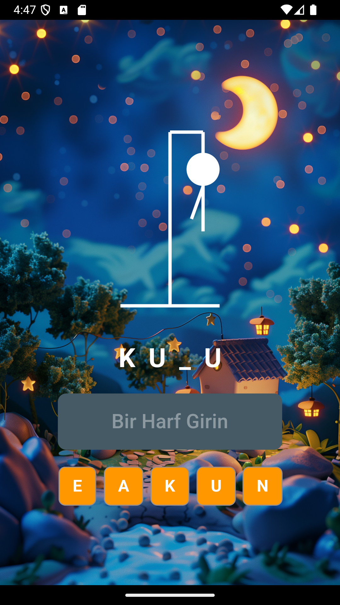
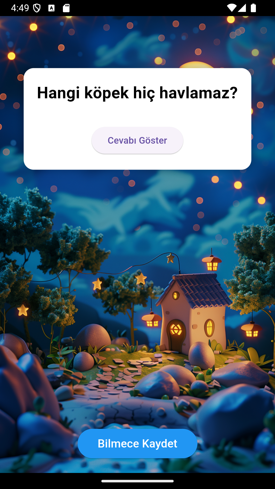
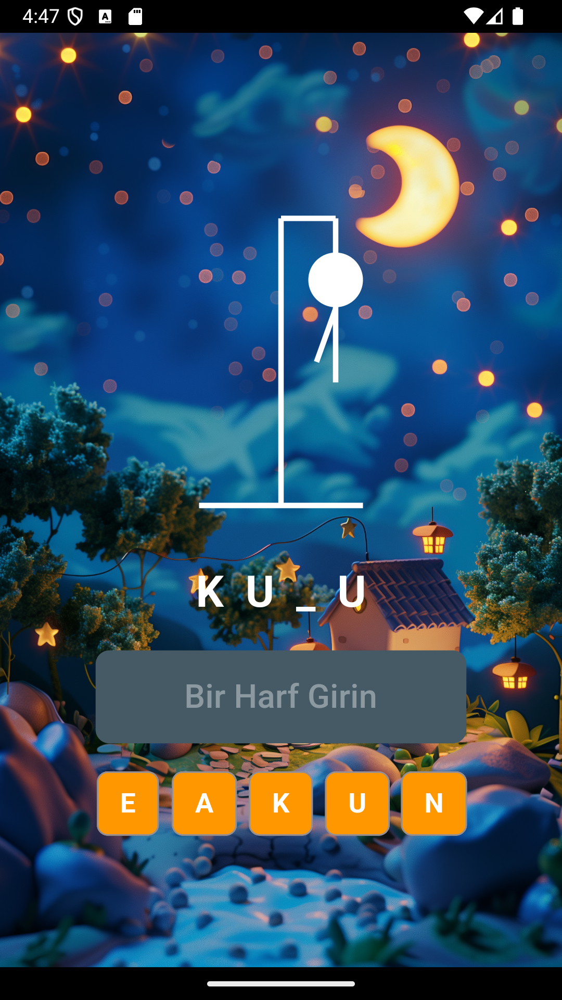
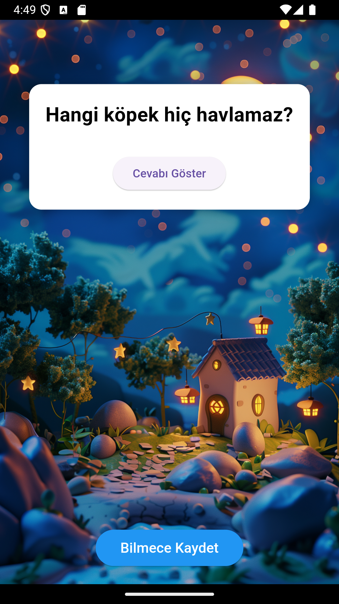


 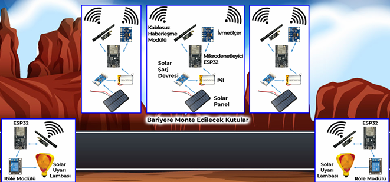
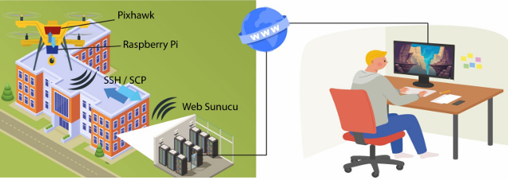
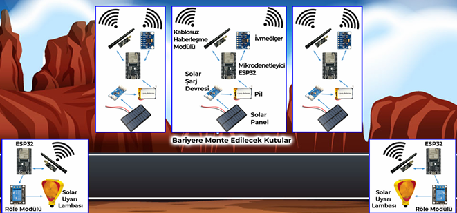
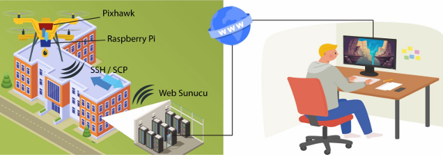
 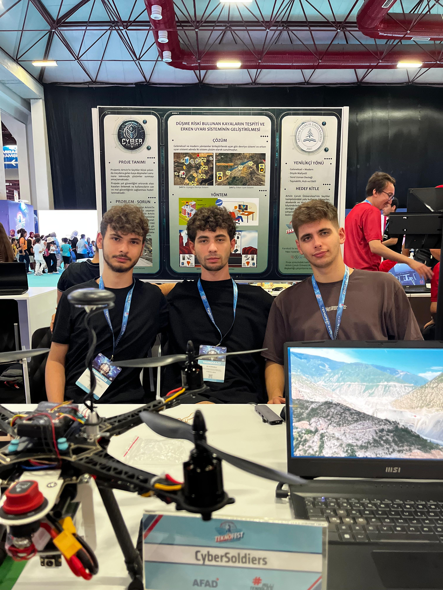
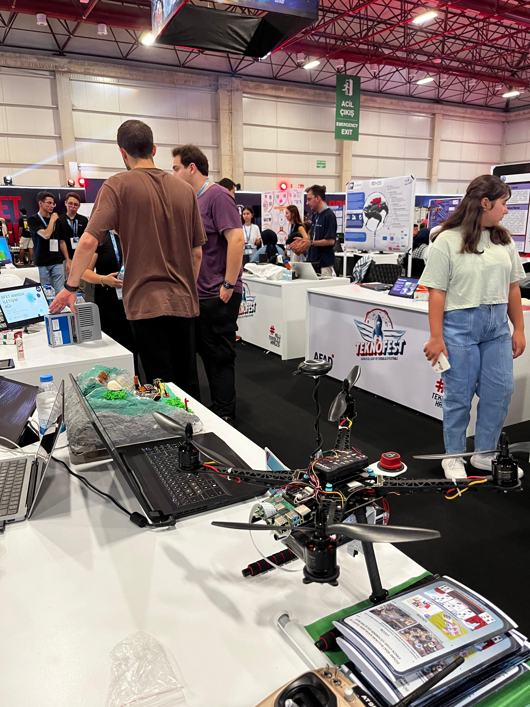
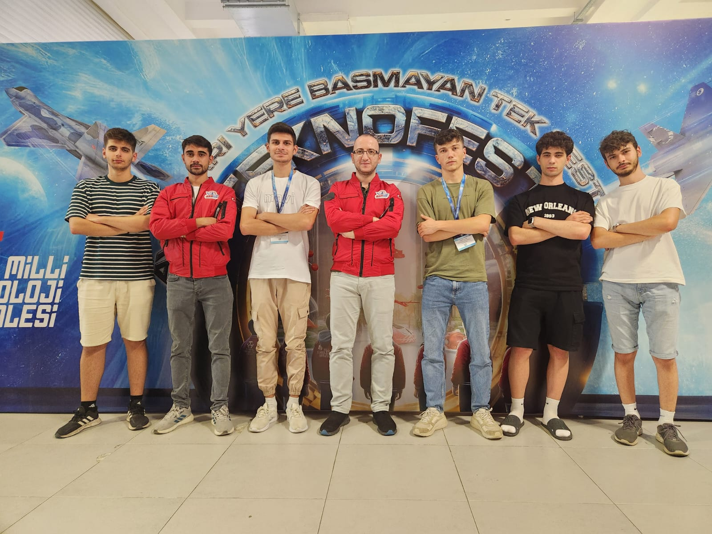
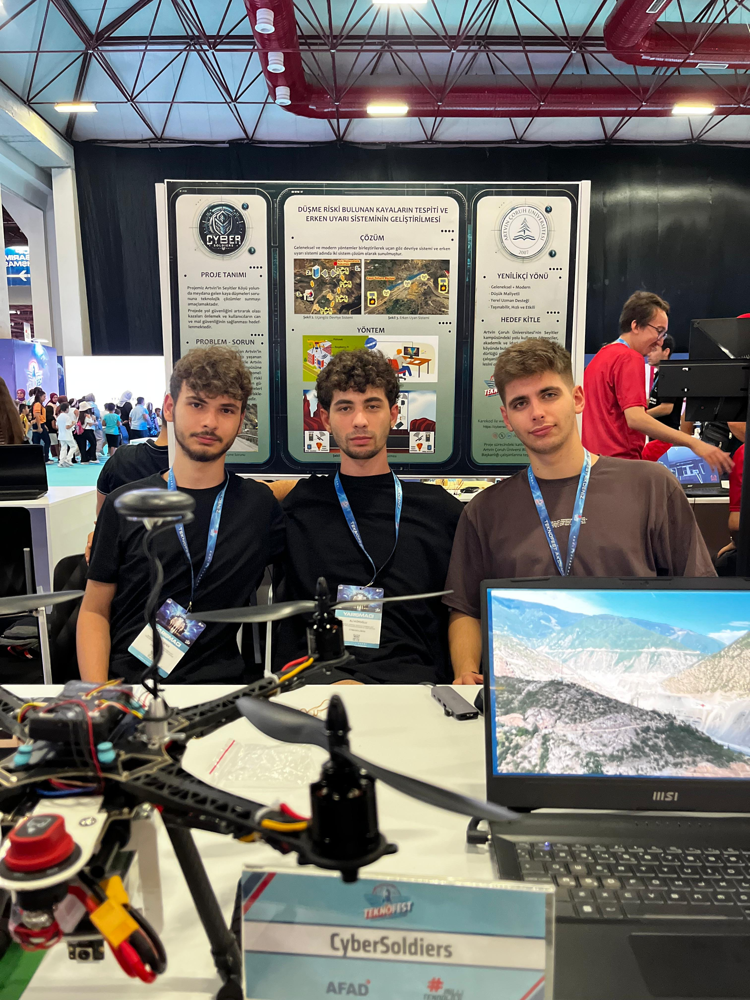
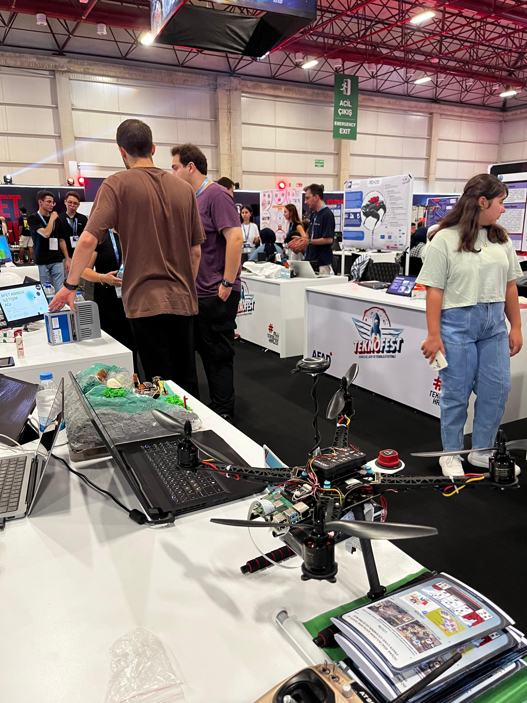
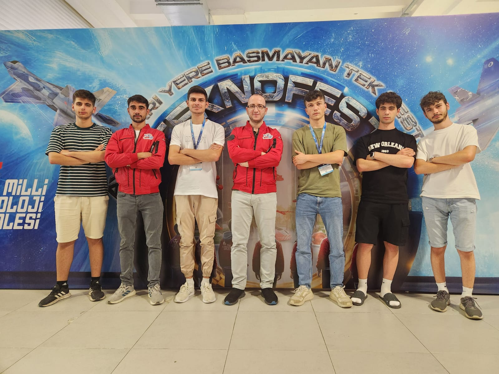